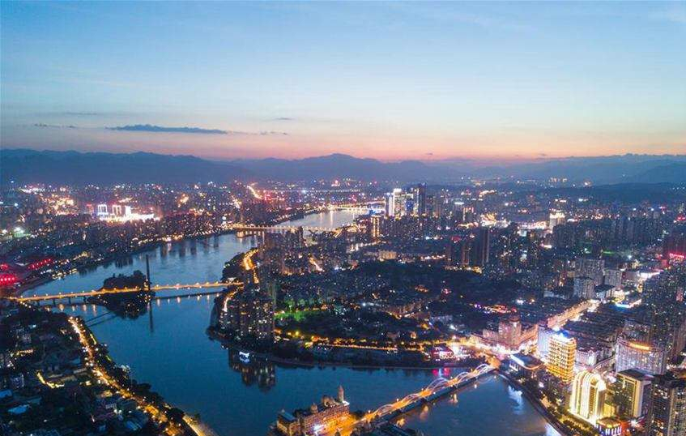

福州简介
福州，别称榕城，简称“榕”，隶属于福建省，是福建省省会，获“中国优秀旅游城市”“国家环保模范城”“国家历史文化名城”等称号。
福州建城于公元前202年，历史上曾长期作为福建的政治中心，是中国东南沿海重要都市、东部战区陆军机关驻地。福州地貌属典型的河口盆地，盆地四周被群山峻岭所环抱，属亚热带海洋性季风气候，福州是首批14个对外开放的沿海港口城市之一，是近代中国最早开放的五个通商口岸之一。

福州简介
福州，别称榕城，简称“榕”，隶属于福建省，是福建省省会，获“中国优秀旅游城市”“国家环保模范城”“国家历史文化名城”等称号。
福州建城于公元前202年，历史上曾长期作为福建的政治中心，是中国东南沿海重要都市、东部战区陆军机关驻地。福州地貌属典型的河口盆地，盆地四周被群山峻岭所环抱，属亚热带海洋性季风气候，福州是首批14个对外开放的沿海港口城市之一，是近代中国最早开放的五个通商口岸之一。
民俗文化
福州民间习俗可分为节俗、婚丧寿事俗、乡俗、食俗、穿戴俗五大类，有闹花灯、踩高跷、舞龙灯、舞狮子、赛龙舟、登高等民俗活动。
游神、迎神是福州乡村正月里举行的一种习俗活动。农历的正月初三至十五，便是游神的时间。以村为单位，有时数村联合，用敞篷大轿抬着当地供奉的神祗塑像，在锣鼓和鞭炮声中结队巡游村境，百姓夹道观看、迎接，场面热烈。
旅游景点
福州又名“三山”，于山、乌山、屏山三山鼎立，美丽的自然风光一览无余。福州历史悠久，各种人文古迹荟萃于此。狭长斑驳的古旧巷陌、香火悠然的百年古寺、散落城中的名人故居等，都透露出福州老城的厚重文化和福州人淡然宁静的生活气息。
福州的主要游览景点有鼓山、乌山、于山、三坊七巷、西禅寺、西湖公园、江滨公园、华林寺、海坛岛、鼓山、旗山、青云山、于山、乌山、屏山等。